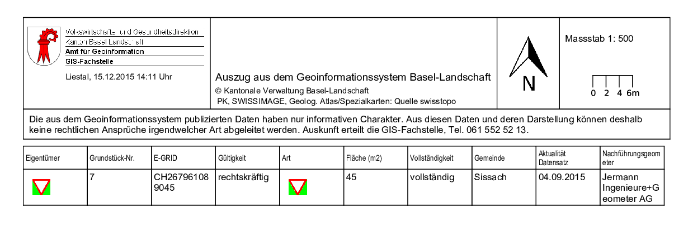

Configuration of tables with HTML images
This section explains how to add one or multiple images to a table subreport.
In a first step a table needs to be configured. For this, the processor
!prepareTable is used. The column containing the image needs
to be defined which is done using:
...
icon: !urlImage
urlExtractor: (.*) # Use regular expression (regex) to retrieve the URL of the image in the text of the icon column.
urlGroup: 1
...
The source column may contain more text than just the URL of the image. For this reason a regex expression, passed to urlExtractor, is used to filter out the URL.
The following example shows a configuration of a table where the column with the title "icon" contains
the URL to the image. For GeoMapFish applications the column name depends on the title that is used in
the interface and therefore can be the translation of the underlying database column name (if a database
is used).
In the example below all columns from the original table are included in the printed table
without formatting.
...
- !prepareTable
dynamic: true
columns:
icon: !urlImage # This interprets the text contained in the column icon as an image URL.
urlExtractor: (.*) # Use Regex expression to retrieve the URL of the image in the text of the icon column.
urlGroup: 1
...
To add formating styles to the printed table there are two possibilities:
- To add a subreport in form of a JasperReport template containing all of the columns that are to be included in the printed report. This requires the dynamic flag in the processor !prepareTable to be false.
- Use the styling from a subreport template but generate the columns dynamically. In this case the JasperReports template (table_a4_portrait.jrxml) must contain one element. An example for this type of configuration is given below.
...
- !prepareTable
excludeColumns:
- not_shown_in_print # Columns that will not be shown in the printed table
maxColumns: 8
dynamic: true
jasperTemplate: table_a4_portrait.jrxml # - If dynamic is true this template will be used to obtain the column styles and the size of the subreport.
firstDetailStyle: column_style_1 # - optional
detailStyle: column_style_2 # - required when dynamic = true
lastDetailStyle: column_style_3 # - optional
firstHeaderStyle: header_style_1 # - optional
headerStyle: header_style_2 # - required when dynamic = true
lastHeaderStyle: header_style_3 # - optional
columns:
icon: !urlImage # This interprets the text contained in the column icon as an image URL.
urlExtractor: (.*) # Use Regex expression to retrieve the URL of the image in the text of the icon column.
urlGroup: 1
...
For the case that multiple columns with different titles contain images each column has to be configured
in the config.yaml. Below is an example where two columns Icon and Image
contain images. The columns can be in the same table and/or they can be in different tables. This means
if two columns Icon and Image are configured to contain images (as in the
example below), it is possible to have two tables, one table with the column Icon and
the other table with the columns Icon and Image. In the print all tree
columns contain images in the print.
config.yaml
...
- !prepareTable
excludeColumns:
- not_shown_in_prinit # Columns that will not be shown in the printed table
maxColumns: 10
dynamic: true
jasperTemplate: table_a4_portrait.jrxml
detailStyle: column_style_2
headerStyle: header_style_2
columns:
Icon: !urlImage # Declare the column icon to contain an image
urlExtractor: (.*)
urlGroup: 1
Image: !urlImage # Declare the column image to contain an image
urlExtractor: (.*)
urlGroup: 1
...
table_a4_portrait.jrxml
...
<detail>
<band height="20">
<property name="com.jaspersoft.studio.layout" value="com.jaspersoft.studio.editor.layout.HorizontalRowLayout"/>
<textField textAdjust="StretchHeight" isBlankWhenNull="true">
<reportElement key="style2" style="column_style_2" positionType="Float" stretchType="RelativeToTallestObject" x="0" y="0" width="185" height="20" isPrintWhenDetailOverflows="true" uuid="1e0ee0ef-22a5-43d5-b8d2-a731fc573055"/>
</textField>
</band>
</detail>
...
The resulting output of the above configuration is shown in the figure below.
